cabn asset pipeline — M2 preview
Palette
Recovered sprites
cabin
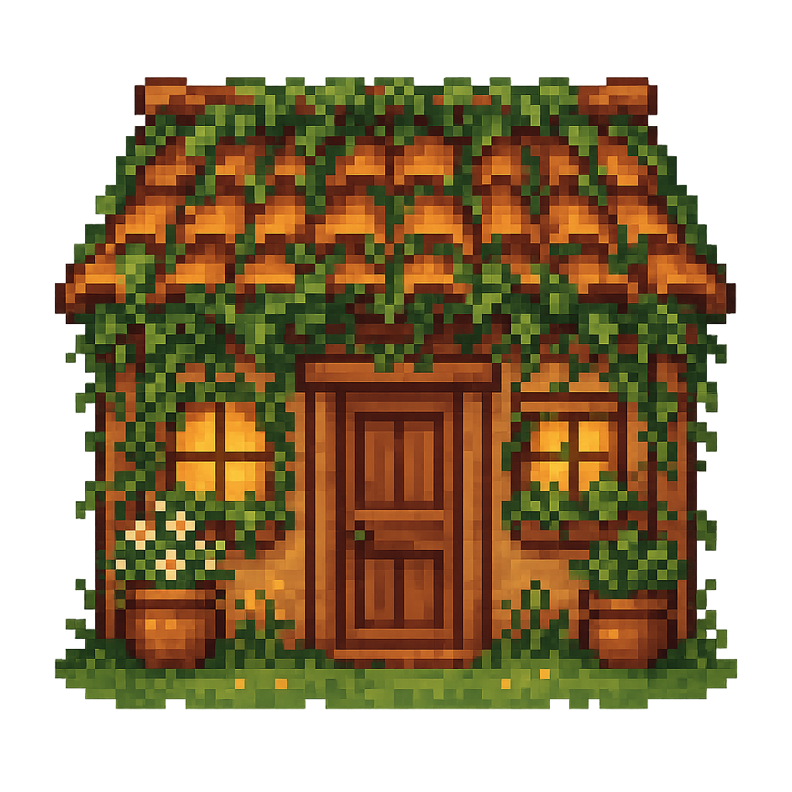
source (1024, shown at 192)
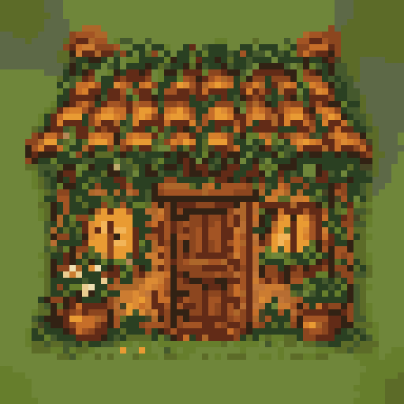
quantized only
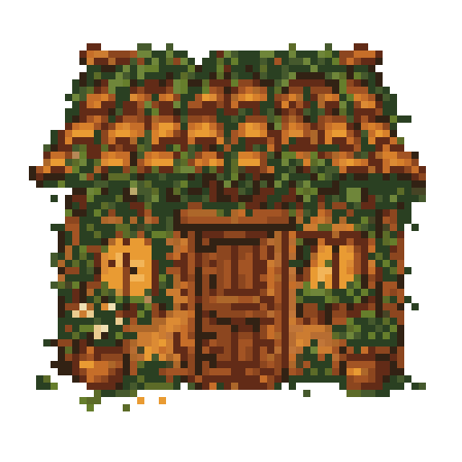
recovered (bg removed)
cabinet
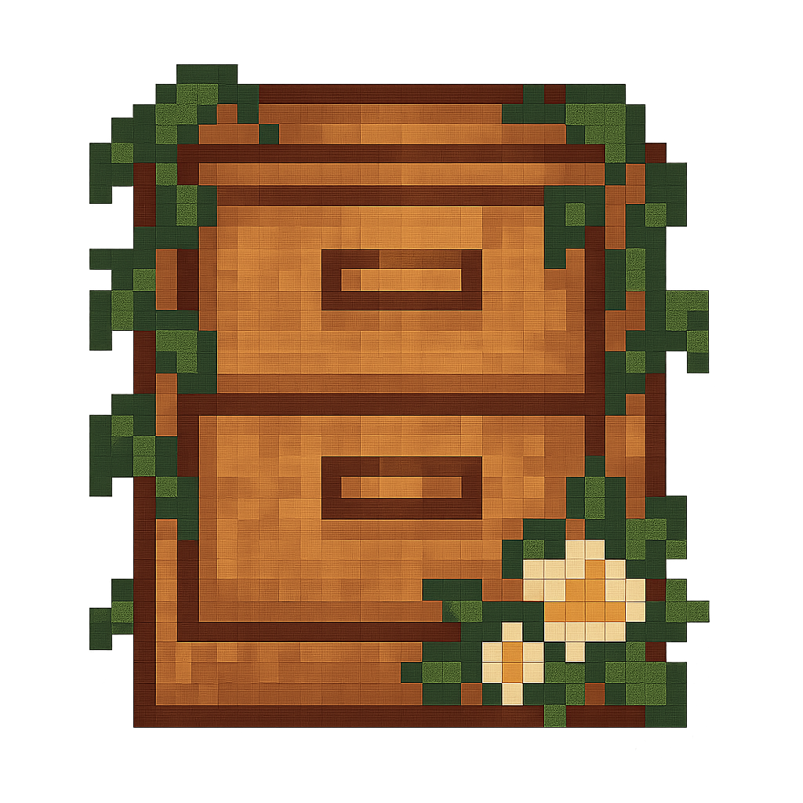
source (1024, shown at 192)
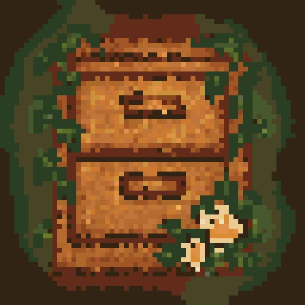
quantized only
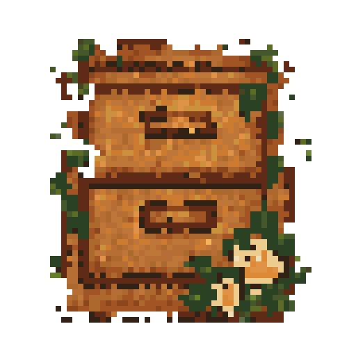
recovered (bg removed)
file
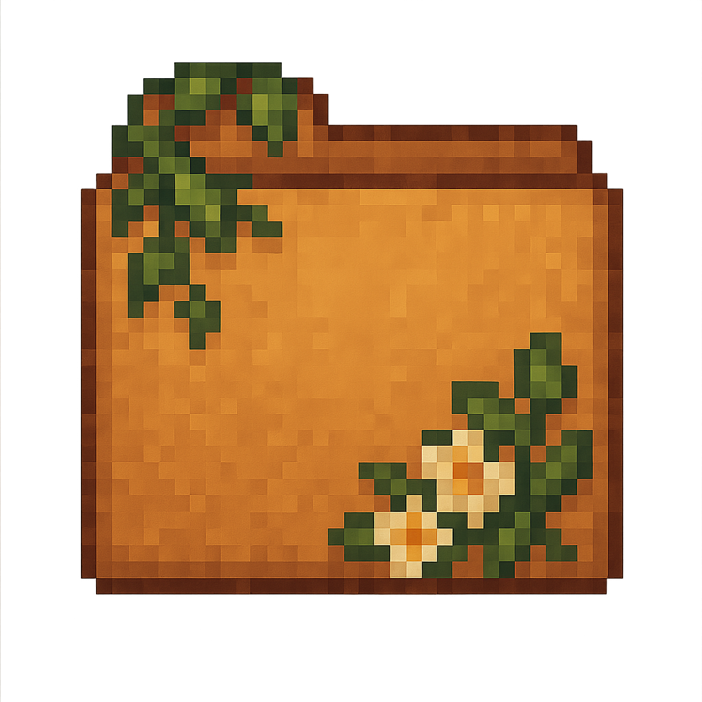
source (1024, shown at 192)
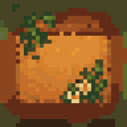
quantized only
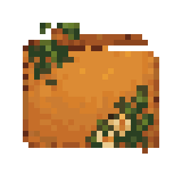
recovered (bg removed)
key
source (1024, shown at 192)
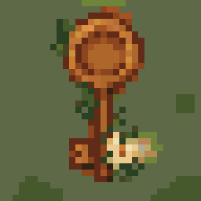
quantized only
recovered (bg removed)
letter_opener
source (1024, shown at 192)
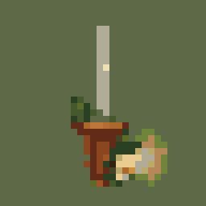
quantized only
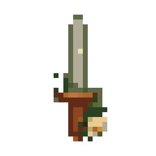
recovered (bg removed)
Placeholder sprites
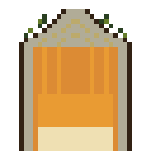
portal_arch
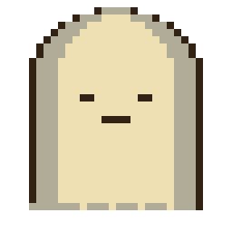
ghost
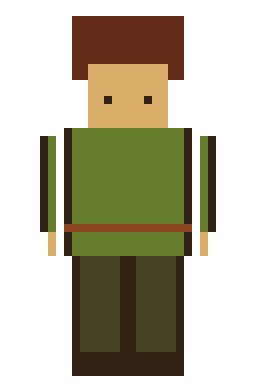
character_idle